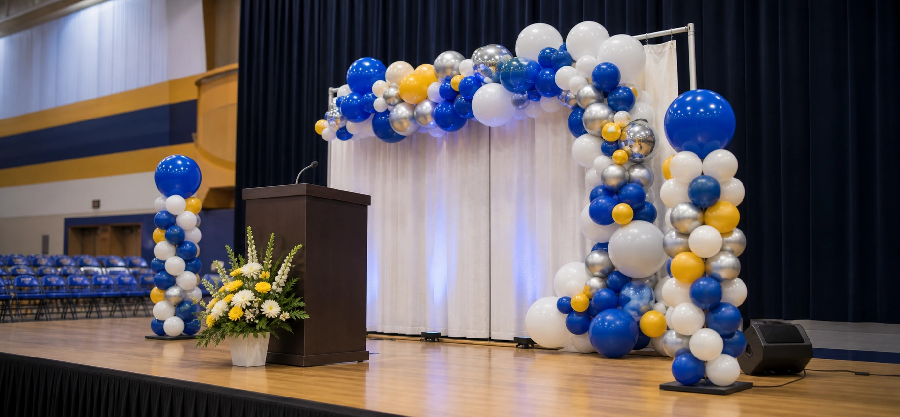

Locally Twisted
Utah event balloons since 1998
Grand openings · ribbon cuttings · new locations
Make your opening impossible to miss.
Brand-matched balloon decor for photo-ready entrances, ribbon moments, customer arrivals, and opening-week visibility.

01Opening Day Welcome1 arch · 2 columns
02Opening Day Feature2 arches · 4 columns · 6 accent pieces
03Grand Opening Environment4 arches · 12 columns · 16 accent pieces
04Custom Opening CelebrationDesigned upon request